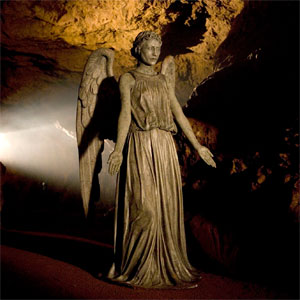

| Daleks |
| Cybermen |
| The Master |
| Lady Cassandra |
| Davros |
| Weeping Angels |
The Villains
Weeping Angels
The Weeping Angels are an ancient race of aliens from the long running sci fi series Doctor Who. Steven Moffat, their creator, attributes their appeal to childhood games such as Grandmother's Footsteps and the notion that every statue is secretly a Weeping Angel.
Their usual mode of feeding is to send their victims back in time, which creates time energy to feed on. When they are not being observed by another being, they can move very quickly and silently, but when they are being observed, they become "quantum-locked", occupying a single position in space and becoming stone. In this state, they are frozen and difficult to destroy. They cannot suppress this reaction. If two Weeping Angels were to look at each other at the same time, they would be trapped in stone form until an outside force moves them apart. To prevent this, they often cover their eyes while moving, which makes them look as though they are weeping.
According to The Doctor, the Weeping Angels "are as old as the universe (or very nearly), but no one really knows where they come from." He describes them as the loneliest beings in the universe, since their quantum-lock reaction makes it difficult for them to socialise; he also describes them as "the deadliest, most powerful, most malevolent life-form evolution has ever produced." That said, in all their TV appearances, the Angels could communicate with each other and work in groups. They are also very physically strong, capable of snapping necks, though physically killing a victim is rare for them unless the need arises (such as stealing someone's voice).